11
USB Programming
This chapter looks at various aspects of using the Arduino with USB. This includes the keyboard and mouse emulation features provided by the Arduino Leonardo and also the reverse process of allowing a USB keyboard or mouse to be connected to a suitably equipped Arduino.

Keyboard and Mouse Emulation
Three Arduino boards—the Due, the Leonardo, and the Micro, which is based on the Leonardo—can use their USB port to emulate a keyboard or mouse. There are also Arduino-compatible boards like the LeoStick from Freetronics (Figure 11-1) that can perform this trick.
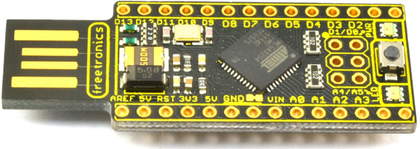
Figure 11-1 The LeoStick
This feature is practically used largely for things like music controllers, giving the Arduino a way to interface with music synthesis and control programs like Ableton Live. You could, for example, build novel musical instruments with Arduino that use accelerometer readings, interrupted beams of light, or pedal boards to control music software.
Some of the sillier applications of these features include pranks where the computer mouse appears to take on a life of its own or the keyboard itself types random letters.
The Arduino Due has two USB ports. Keyboard and mouse emulation takes place on the native USB port, and you normally program the Arduino Due using the programming USB port (Figure 1-2).
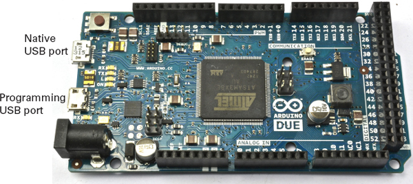
Figure 11-2 The Arduino Due’s two USB ports
Keyboard Emulation
The keyboard functions are quite easy to use. They are part of the core language, so there is no library to include. To begin keyboard emulation, simply put the following command in your startup function:
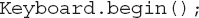
To have the Arduino “type” something, you can use print and println commands and the text will appear wherever the cursor is positioned:
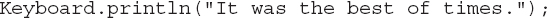
If you need to use modifier keys, such as typing CTRL-C, then you can use the press command:
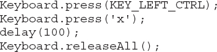
The press command takes a single char as its parameter, and in addition to all the normal characters, a number of constants such as KEY_LEFT_CTRL are defined for you to use. Once you issue the press command, it is as if the key is held down until the releaseAll command is given. You can find a full list of the special keys here: http://arduino.cc/en/Reference/KeyboardModifiers.
NOTE When using the keyboard and mouse emulation features, you may encounter difficulty programming the board as it might be trying to type text while you are trying to program it. The trick is to keep the Reset button depressed and only release it when the “uploading” message appears in the status line of the Arduino IDE.
Keyboard Emulation Example
The following example automatically types text of your choice (for instance, a password) every time the Arduino is reset:
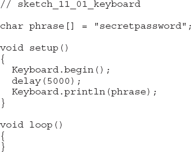
This example would be better if an external button triggered the typing; if you are using a Mac, the operating system thinks a new keyboard has been attached when you reset the device, which opens a system dialog that you must dismiss before the text is typed.
Mouse Emulation
Emulating a mouse follows much the same pattern as emulating a keyboard. Indeed there is no reason why you cannot use both in the same sketch.
The first step is to begin emulation:
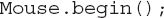
You can then move the mouse using Mouse.move. The three parameters are the amount to move the x, y, and scroll button in pixels. These numbers can be positive (right or down) or negative (left and up). They are relative to the current mouse position, and as there is no way to get the absolute position of the cursor, this emulation just emulates the mouse that moves the cursor, not the cursor itself.
You can also click the mouse using the click command. With no parameters, this command is a simple left button click. You can also optionally supply an argument of MOUSE_RIGHT or MOUSE_MIDDLE.
If you want to control the duration of a mouse click, then you can use the Mouse.press and Mouse.release commands. Mouse.press takes the same optional arguments as Mouse.click. This can be useful if you are, say, making your own mouse from an Arduino and want the button click to be controlled by a switch connected to a digital input on the Arduino. Doing this would allow you to double- or triple-click.
Mouse Emulation Example
The following example moves the mouse randomly around your screen. To stop the program so you can regain control of your computer, either press and hold down the Reset button or just unplug the board.
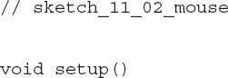
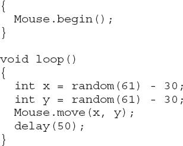
USB Host Programming
Whereas the Leonardo, Due, and Micro have the ability to act like a keyboard or mouse, only the Due and the lesser known Arduino Mega ADK have a feature that allows you to connect a USB keyboard or mouse to it so you can use it as an input device. This feature is called USB Host, and although only the Due supports it directly, there are third-party USB host shields that you can plug into an Arduino Uno or Leonardo that give you USB Host.
What is more, if you have a wireless keyboard and mouse (not the Bluetooth variety), it should also work if you plug the USB adaptor into the host shield’s USB socket. This way you can add wireless remote control to an Arduino.
The USB Host facility is not only restricted to a keyboard and mouse; you can use it for many other USB peripherals, such as video game controllers, cameras, and Bluetooth, and to interface with your Android phone.
USB Host Shield and Library
The USB Host shield and accompanying libraries have been around for a few years and now support a good range of peripherals. The original shield was developed by Circuits@home (www.circuitsathome.com/). Other compatible USB Host shields are now available from Sparkfun, SainSmart, and probably others. Figure 11-3 shows a Sparkfun USB Host shield attached to an Arduino Uno. Note that at the time of writing, these boards are not compatible with the Arduino Leonardo, or, in fact, anything much more exotic than a Uno. So check before buying.
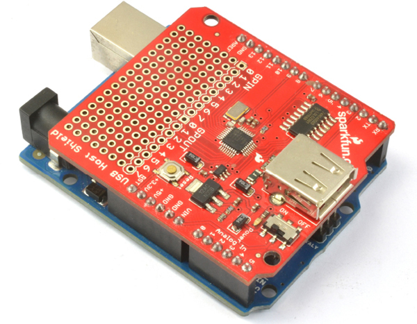
Figure 11-3 Sparkfun USB Host shield
This particular board has a handy prototyping area to which you can solder your own extra components. An alternative to a shield is to use a board such as the Freetronics USBDroid (Figure 11-4). This board has both a micro USB port for programming the board and a full-size USB socket that you can plug a keyboard or similar into.
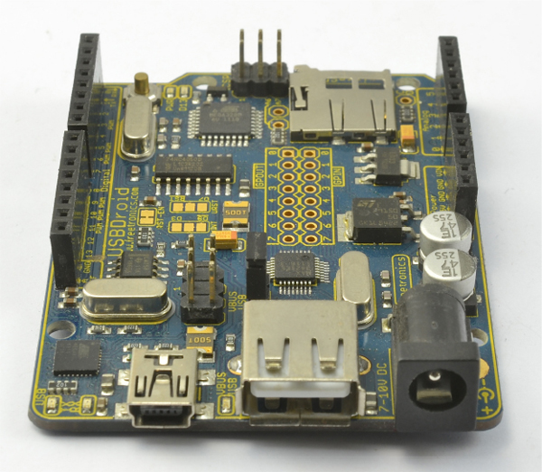
Figure 11-4 The Freetronics USBDroid
If you are using the USBDroid or an unofficial USB Host shield, then you need to use the original USB_Host_Shield library from Circuits@ Home. If you are using the official board, then the USB_Host_Shield_2 library is available with support for more types of devices.
USB programming using the Host Shield Libraries is not easy. The library provides a fairly low-level interface to the USB bus. The sample sketch sketch_11_03_host_keyboard, available from the author’s web site (www.simonmonk.org), is an example of connecting a keyboard using a USB Host connection.
This sketch is adapted from one of the example sketches in the examples folder of the USB_Host_Shield library. The code is changed to output keypresses to the Serial Monitor rather than to an LCD screen as in the original example, however.
The sketch (and the original on which it is based) make a useful template for your own code, as they both handle all the keys on the keyboard properly. If you were only interested in the digit or cursor keys, then you could greatly simplify the sketch.
The sketch is too long to list here in full, so instead I will just highlight key areas. You might find it useful to have the sketch loaded while reading the descriptions of the code.
There are three libraries to import:
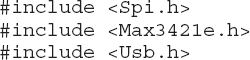
The Spi.h library is required because that is the interface used by the USB Host controller chip. The chip itself is a Max3421e, hence, that library, and finally there is another library (Usb.h) layered on top of that, which hides some of the complexity of using the chip directly.
After importing the libraries, you’ll see a series of constant definitions like this:
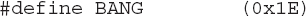
These are just a different way to define constants in C. It could have also been written like this:
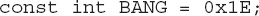
MAX3421E and USB objects are then created, and in setup, the powerOn function of Max is invoked.
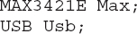
In the loop function, both Max and Usb have their respective Task functions called. This triggers the interface to check for USB activity.
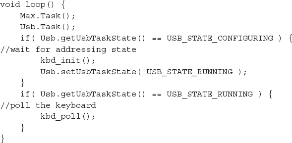
The USB interface will on first startup be in the USB_STATE_CONFIGURING state until the keyboard connection is established when kbd_init is called. This function uses an endpoint record structure (ep_record) into which the parts of the message are placed to establish a message to begin the link with the keyboard:
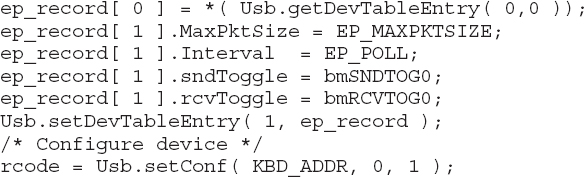
After initialization is complete, the most likely state encountered in the main loop is that the keyboard is up and running (USB_STATE_RUNNING), in which case kbd_poll is called to check for a keypress on the keyboard.
The key line in kbd_poll is
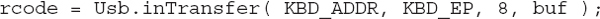
This line reads a USB key scancode to see if a key has been pressed. This code is not the same as an ASCII value. The mapping to ASCII takes place in the HIDtoA function. This function is the most complex in the sketch, but one that you can easily reuse in your own sketches. You can find a list of scancodes and how they map to ASCII here: www.win.tue.nl/~aeb/linux/kbd/scancodes-1.html.
One interesting feature of the USB Human Interface Device (HID) protocol used with keyboards is that the SCROLL LOCK and NUM LOCK indicator LEDs can be controlled. This takes place in the kbd_poll function in response to the SCROLL LOCK, CAPS LOCK, and NUM LOCK keys being pressed, however, you could write a little sketch like the one in sketch_11_04_host_scroll_lock that simply flashes the LEDs.
The key function in this sketch is
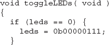
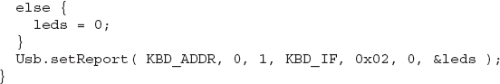
The three least significant bits of the character are flags for the three “lock” LEDs on the keyboard.
USB Host on the Arduino Due
The Arduino Due hast the ability to act as a built-in USB Host. This feature is, at the time of writing, considered to be “experimental” by the Arduino team. Check the official Arduino documentation (http://arduino.cc/en/Reference/USBHost) for changes to the status of this work or any changes to the way it is used.
The Due does not have a full-size USB socket into which you can directly plug a USB keyboard or mouse. To use such devices, you must get a Micro USB OTG Host Cable like the one attached to the Due pictured in Figure 11-5. In the figure, the USB adapter for a wireless keyboard is attached to the Arduino Due, but a regular USB keyboard would work just fine.
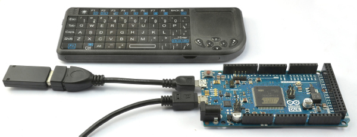
Figure 11-5 Arduino Due with a Micro USB OTG Host Cable and keyboard
The USB libraries on the Arduino Due are actually a great deal easier to use than the USB Host library and will return the ASCII value of a key that is pressed and not just the USB key scancode. The following example illustrates interfacing to a keyboard. It simply echoes each keypress in the Serial Monitor.
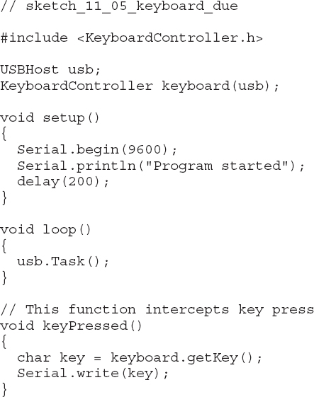
The KeyboardController library invokes the keyPressed function in the sketch every time a key is pressed. You can also intercept key release using the keyReleased function. To find out which key was pressed, you must call one of the following functions on the keyboard object:
• getModifiers Returns a bit mask for any modifier key that is depressed (SHIFT, CTRL, and so on). See http://arduino.cc/en/Reference/GetModifiers for the codes.
• getKey Gets the current key as an ASCII value.
• getOemKey Returns the key scancode.
Using a mouse is equally easy and follows a similar pattern to the keyboard controller. The following example writes a letter—L, R, U, or D—depending on whether the mouse is moved left, right, up, or down:
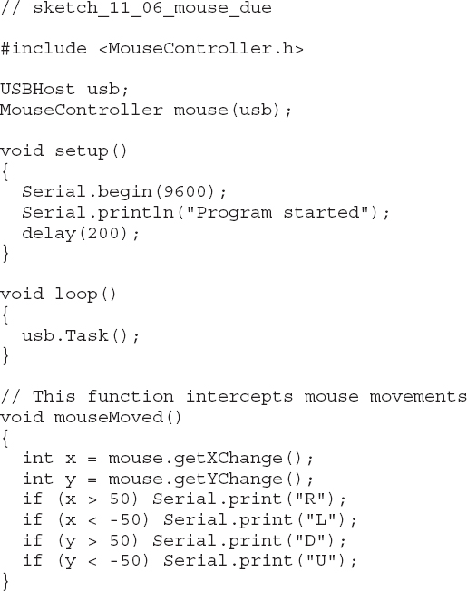
As well as the mouseMoved function, you can also add the following functions to intercept other mouse events:
• mouseDragged This event is triggered when moving the mouse while holding down the left button.
• mousePressed This event is triggered when a mouse button is pressed and should be followed by a call to mouse.getButton, which takes a button name of LEFT_BUTTON, RIGHT_BUTTON, or MIDDLE_BUTTON as an argument and returns true if it has been pressed.
• mouseReleased This function is the counterpart to mousePressed and is used to detect when the mouse has been released.
Summary
In this chapter, you looked at a few ways to use an Arduino with USB devices.
In the next chapter, we will look at using wired and wireless network connections with an Arduino and learn how to do some network programming as well as make use of the Ethernet and WiFi Arduino shields.